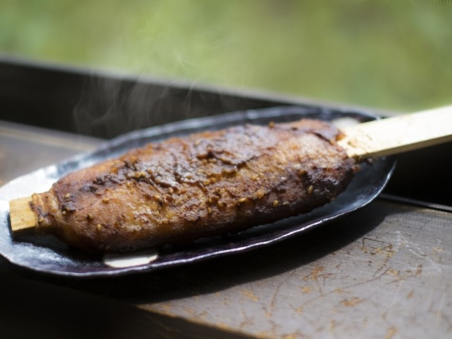
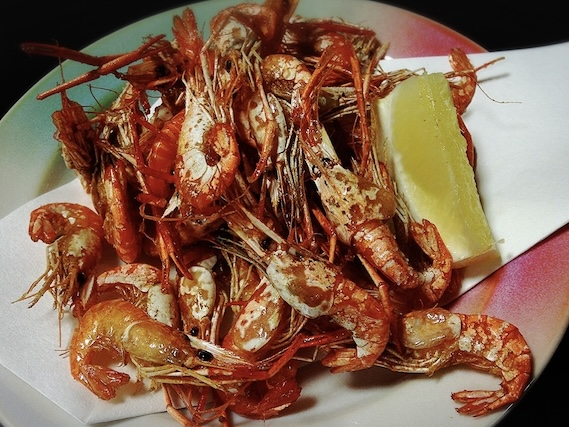
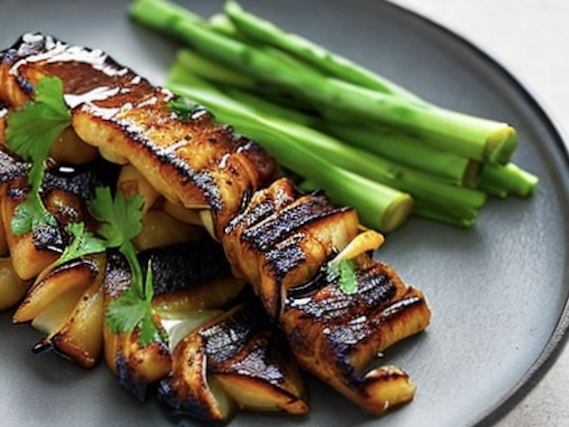

中部地方に伝わる郷土料理。蛤石村に伝わる独自のタレをつけ、粳米(うるちまい)の食感が残る香ばしく味わい深い一品。

蛤石村を流れる清流で得ることのできるウチダザリガニの素揚げ。高温な油でさっと素揚げすることにより外はカリッとした食感。中身は噛みごたえのあるぷりっとした食感をお楽しみ頂けます。

大自然に囲まれた蛤石村だからこそ豊富に取れるアオダイショウを蒲焼でお召し上がりください。ふんだんに塗ってある伝統的な濃厚なタレにあなたは虜になるでしょう。